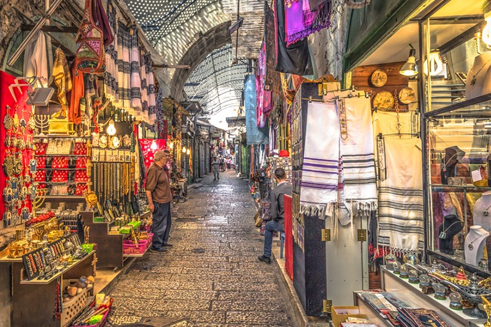
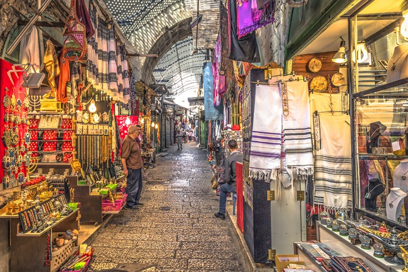

درباره ی چابهار و فعالیت ما
درباره شهر ساحلی چابهار :
چابَهار یا چاه بهار (گویش بلوچی: چَهبار) ،مجهزترین و پیشرفتهترین بندر اقیانوسی کشور که درجنوب استان سیستان و بلوچستان است. این بندر در کرانهٔ دریای مَکران و اقیانوس هند واقع شدهاست. چابهار تنها بندر اقیانوسی ایران است که دارای دو اسکله مجهز با ظرفیت ۸/۵ میلیون تن کالا در سال میباشد که کشتیهای اقیانوسپیما میتوانند در اسکله آن پهلوگیری کنند.
درباره فعالیت این سایت :
در این سایت ما قصد داریم تا برای شناخت هرچه بیشتر مردمان ایران از این خطه ی زیبا و بکر توضیحاتی دهیم تا شناختی عمیق تر نسبت به زیبایی ها و جذابیت های این منطقه، برای مسافران، ایجاد شود.
بیشتر ←
 
